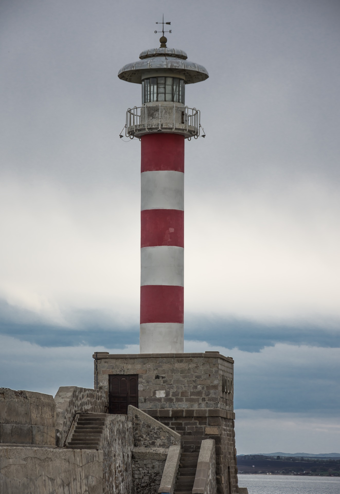

Гледаемост и доверие към масмедиите в България
Българите гледат обществените медии, но не им вярват, те не вярват на тези медии, но ги смятат за важни за демокрацията и се информират от тях ежедневно.
Това показва проучване на фондация "Конрад Аденауер" за обществените медии в Югоизточна Европа, озаглавено A Pillar of Democracy on Shaky Ground. То обхваща още Албания, Босна и Херцеговина, Хърватия, Косово, Молдова, Черна гора, Северна Македония, Румъния и Сърбия, в десетте държави са анкетирани общо 10 хил. души. 81% от българите смятат, че обществените медии са важни за демокрацията, но 69% са на мнение, че върху тях се упражнява политическо влияние.
Само 24% изпитват доверие към обществената телевизия и 31% - към радиото, докато частните медии се радват на малко по-висок авторитет. Но дори най-достойната за доверие медия – частните радиа, имат едва 41% аудитория, която казва, че изпитва високо или много високо доверие към тях. "Българите като цяло са много критични към медиите", отбелязва проучването. Въпреки това България е една от държавите, където обществените медии имат най-голяма аудитория – 71% се информират ежедневно от тях, а 18% - няколко пъти седмично. Само българите на възраст между 18 и 29 години години потребяват обществени медии в по-малък процент – 60% ежедневно.
Най-голям процент българи са на мнение, че финансирането на БНР и БНТ трябва да идва от реклама (38%) или смесена форма на реклама и друго финансиране (32%). 20% не знаят и едва 5% смятат, че тя трябва да се финансира от данъци, а 4% - от такси. Новини (74%), образователни предавания (68%) и филми (66%) - това е предпочитаното съдържание.
Обществените медии се ползват с авторитет в целия регион – повече от две трети от хората в тези държави смятат, че те са важни за демокрацията, като в България най-много хора са на това мнение. Хърватите и румънците също са в челната тройка със 78% граждани, съгласни с това твърдение. "Тези три държави може би са развили по-силно усещане за демокрация, благодарение на членството си в ЕС", отбелязват авторите на изследването. Въпреки това почти две трети от всички виждат политическо влияние в обществените медии, като най-голям процент хора са на това мнение в Босна и Херцеговина (88%), Хърватия (83%) и Черна гора (71%). Само 46% от албанците и 50% от косоварите обаче виждат такъв натиск над своите държавни медии.